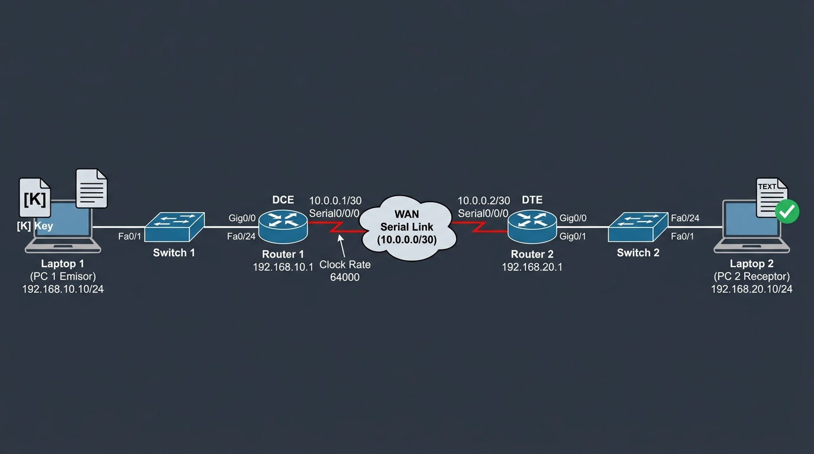

Práctica de Administración y Seguridad de Redes: Topología WAN y Cifrado
Guía completa y detallada para el montaje de la topología en Cisco Packet Tracer, la implementación en equipos físicos (2 laptops + routers), y el funcionamiento de la aplicación web de cifrado y descifrado.
1. Diagrama de la Topología y Modelos Exactos de Equipos

La topología reproduce con exactitud el esquema de la pizarra:
[ PC 1 ] ──(Fa0)──► [ Switch 1 ] ──(Gig0/0)──► [ Router 1 ] ──(Se0/0/0)──► ┌──────────────┐
│ NUBE WAN │
[ PC 2 ] ◄──(Fa0)── [ Switch 2 ] ◄──(Gig0/0)── [ Router 2 ] ◄──(Se0/0/0)── └──────────────┘Modelos de Dispositivos a Elegir en Cisco Packet Tracer:
| Dispositivo | Modelo en Packet Tracer | Nombre / Rol | Módulos Requeridos |
|---|---|---|---|
| PC 1 | PC-PT (End Devices) |
PC1 (Emisor / Laptop 1) | Tarjeta FastEthernet por defecto |
| Switch 1 | 2960-24TT (Switches) |
SW1 | 24 puertos FastEthernet + 2 Gigabit |
| Router 1 | 1941 o 2811 (Routers) |
R1 | Módulo HWIC-2T (para puertos seriales) |
| Nube WAN | Cloud-PT (WAN Emulation) |
Nube WAN | Módulos seriales por defecto |
| Router 2 | 1941 o 2811 (Routers) |
R2 | Módulo HWIC-2T (para puertos seriales) |
| Switch 2 | 2960-24TT (Switches) |
SW2 | 24 puertos FastEthernet + 2 Gigabit |
| PC 2 | PC-PT o Server-PT |
PC2 (Receptor / Servidor Web) | Tarjeta FastEthernet por defecto |
💡 Cómo agregar puertos Seriales a los Routers 1941 en Packet Tracer:
1. Haz clic sobre el routerR1.
2. En la pestaña Physical, haz clic en el interruptor para apagar el router.
3. En la lista izquierda de módulos, seleccionaHWIC-2T.
4. Arrastra la tarjeta a la ranura vacía derecha (Slot 0).
5. Vuelve a hacer clic en el interruptor para encender el router.
6. Repite el mismo procedimiento enR2.
2. Tabla Maestra de Direccionamiento IP, Puertos y Cableado
| Dispositivo | Interfaz | Dirección IP | Máscara | Gateway | Tipo de Cable | Conecta a |
|---|---|---|---|---|---|---|
| PC 1 | FastEthernet0 |
192.168.10.10 |
255.255.255.0 |
192.168.10.1 |
Directo (Cobre - Negro) | Switch 1 Fa0/1 |
| Switch 1 | Vlan 1 |
192.168.10.2 |
255.255.255.0 |
192.168.10.1 |
Directo (Cobre - Negro) | Router 1 Gig0/0 desde Fa0/24 |
| Router 1 | Gig0/0Serial0/0/0 |
192.168.10.110.0.0.1 |
255.255.255.0255.255.255.252 |
N/A N/A |
Directo a SW1 Serial DTE (Rojo con reloj) |
Conecta a SW1 Fa0/24Conecta a Nube Serial0 |
| Nube WAN | Serial0Serial1 |
Frame-Relay Frame-Relay |
N/A | N/A | Serial DTE | R1 Serial0/0/0R2 Serial0/0/0 |
| Router 2 | Serial0/0/0Gig0/0 |
10.0.0.2192.168.20.1 |
255.255.255.252255.255.255.0 |
N/A N/A |
Serial DTE (Rojo con reloj) Directo a SW2 |
Conecta a Nube Serial1Conecta a SW2 Fa0/24 |
| Switch 2 | Vlan 1 |
192.168.20.2 |
255.255.255.0 |
192.168.20.1 |
Directo (Cobre - Negro) | Router 2 Gig0/0 desde Fa0/24 |
| PC 2 | FastEthernet0 |
192.168.20.10 |
255.255.255.0 |
192.168.20.1 |
Directo (Cobre - Negro) | Switch 2 Fa0/1 (Puerto Web 5000) |
3. Conexiones Interfaz por Interfaz (Paso a Paso)
Este apartado detalla exactamente qué puerto físico se conecta con cuál en toda la topología, el cable que debes seleccionar en Cisco Packet Tracer y el propósito de cada enlace:
| # | Dispositivo Origen | Interfaz Origen | Dispositivo Destino | Interfaz Destino | Herramienta de Cable en Packet Tracer | Color / Icono en PT |
|---|---|---|---|---|---|---|
| 1 | PC 1 | FastEthernet 0 |
Switch 1 | FastEthernet 0/1 |
Copper Straight-Through (Directo) | Línea continua Negra |
| 2 | Switch 1 | FastEthernet 0/24 |
Router 1 | GigabitEthernet 0/0 |
Copper Straight-Through (Directo) | Línea continua Negra |
| 3 | Router 1 | Serial 0/0/0 |
Nube WAN | Serial 0 |
Serial DTE | Línea en zigzag Roja con reloj |
| 4 | Nube WAN | Serial 1 |
Router 2 | Serial 0/0/0 |
Serial DTE | Línea en zigzag Roja con reloj |
| 5 | Router 2 | GigabitEthernet 0/0 |
Switch 2 | FastEthernet 0/24 |
Copper Straight-Through (Directo) | Línea continua Negra |
| 6 | Switch 2 | FastEthernet 0/1 |
PC 2 | FastEthernet 0 |
Copper Straight-Through (Directo) | Línea continua Negra |
Explicación Detallada de Cada Conexión:
- 1. PC 1 → Switch 1: Cable directo de cobre desde
FastEthernet 0de la PC haciaFa0/1del switch. Da acceso a la PC a la LAN 1. - 2. Switch 1 → Router 1: Cable directo de cobre desde
Fa0/24(uplink del switch) haciaGig0/0del router. Conecta la LAN con su Gateway192.168.10.1. - 3. Router 1 → Nube WAN: Cable serial rojo (Serial DTE) desde
Serial 0/0/0del router haciaSerial 0de la Nube (circuito Frame-Relay DLCI102). - 4. Nube WAN → Router 2: Cable serial rojo (Serial DTE) desde
Serial 1de la Nube haciaSerial 0/0/0del router 2 (circuito Frame-Relay DLCI201). - 5. Router 2 → Switch 2: Cable directo de cobre desde
Gig0/0del router 2 (Gateway192.168.20.1) haciaFa0/24del switch 2. - 6. Switch 2 → PC 2: Cable directo de cobre desde
Fa0/1del switch haciaFastEthernet 0de la PC 2 / Servidor.
4. Paso a Paso: Cómo Configurar la Nube WAN en Packet Tracer
La nube emula una red WAN de conmutación de paquetes mediante el protocolo Frame Relay.
- Haz clic sobre el dispositivo
Cloud-PT. - Ve a la pestaña
Config. - Paso 3.1 - Configurar las Interfaces Seriales:
- En el menú izquierdo, bajo
INTERFACES, haz clic enSerial0:- En
DLCI, escribe:102 - En
Name, escribe:R1-a-R2 - Haz clic en el botón
Add.
- En
- En el menú izquierdo, haz clic en
Serial1:- En
DLCI, escribe:201 - En
Name, escribe:R2-a-R1 - Haz clic en el botón
Add.
- En
- En el menú izquierdo, bajo
- Paso 3.2 - Crear el Puente Frame Relay:
- En el menú izquierdo, bajo
CONNECTIONS, haz clic enFrame Relay. - En el selector de la izquierda (Serial0), elige:
102 R1-a-R2. - En el selector de la derecha (Serial1), elige:
201 R2-a-R1. - Haz clic en el botón
Add. - Verás en la tabla la ruta bidireccional:
Serial0: 102 <----> Serial1: 201.
- En el menú izquierdo, bajo
- Cierra la ventana de la Nube. ¡Listo!
5. Comandos para Routers (CLI)
Router 1 (R1 - Lado Emisor):
enable
configure terminal
hostname R1
no ip domain-lookup
! Interfaz LAN 1 hacia Switch 1
interface GigabitEthernet0/0
description Enlace a LAN 1
ip address 192.168.10.1 255.255.255.0
no shutdown
exit
! Interfaz Serial hacia Nube WAN
interface Serial0/0/0
description Enlace WAN hacia Nube Frame-Relay
ip address 10.0.0.1 255.255.255.252
encapsulation frame-relay
frame-relay map ip 10.0.0.2 102 broadcast
no shutdown
exit
! Ruta estática para alcanzar la LAN 2
ip route 192.168.20.0 255.255.255.0 10.0.0.2
end
write memoryRouter 2 (R2 - Lado Receptor):
enable
configure terminal
hostname R2
no ip domain-lookup
! Interfaz LAN 2 hacia Switch 2
interface GigabitEthernet0/0
description Enlace a LAN 2
ip address 192.168.20.1 255.255.255.0
no shutdown
exit
! Interfaz Serial hacia Nube WAN
interface Serial0/0/0
description Enlace WAN hacia Nube Frame-Relay
ip address 10.0.0.2 255.255.255.252
encapsulation frame-relay
frame-relay map ip 10.0.0.1 201 broadcast
no shutdown
exit
! Ruta estática para alcanzar la LAN 1
ip route 192.168.10.0 255.255.255.0 10.0.0.1
end
write memory6. Cómo Mostrar la Página Web DENTRO de Cisco Packet Tracer
- En Packet Tracer, coloca un
Server-PTen LAN 2 con IP192.168.20.10y Gateway192.168.20.1. - Haz clic en el
Server-PT→ pestañaServices→HTTP. - Asegúrate de que HTTP esté en
On. - Busca
index.html, haz clic enedit, borra lo que tiene y pega el contenido del archivopacket_tracer_web/index.html. Haz clic enSave. - En PC 1: haz clic en
Desktop→ abreWeb Browser→ escribehttp://192.168.20.10y presionaGo. - ¡La aplicación web se ejecutará directamente dentro de la simulación de Packet Tracer!
7. Cómo Montar el Proyecto con Equipos Físicos Reales (2 Laptops + Routers)
Cuando lleves el proyecto al laboratorio con routers, switches y laptops reales, sigue estos pasos:
7.1 ¿Cómo se hace la "Nube" en la vida real?
En un laboratorio físico no hay una nube de internet flotante. La "Nube WAN" entre Router 1 y Router 2 se hace de una de estas dos formas:
- Opción A (Cable Serial V.35 / Smart Serial DCE-DTE): Se conectan R1 y R2 con un cable serial. El extremo DCE se conecta en R1 y se le configura
clock rate 64000(este extremo simula el reloj del proveedor de la nube). - Opción B (Cable Ethernet Directo RJ-45): En routers modernos sin puertos seriales, se conecta un cable de red directo de
GigabitEthernet 0/1de R1 aGigabitEthernet 0/1de R2, con la subred WAN10.0.0.0/30.
7.2 Configuración de las 2 Laptops en Windows (Paso a Paso)
En cada laptop presiona Win + R, escribe ncpa.cpl, clic derecho en Ethernet → Propiedades → TCP/IPv4:
- Laptop 1 (Emisor - Conectada a Switch 1 puerto Fa0/1):
- IP:
192.168.10.10 - Máscara:
255.255.255.0 - Puerta de enlace:
192.168.10.1
- IP:
- Laptop 2 (Receptor - Conectada a Switch 2 puerto Fa0/1):
- IP:
192.168.20.10 - Máscara:
255.255.255.0 - Puerta de enlace:
192.168.20.1
- IP:
⚠️ Paso Crítico en Laptop 2 (Firewall de Windows):
Por defecto Windows bloquea conexiones entrantes de otras subredes en el puerto 5000. En Laptop 2, abrefirewall.cply desactiva temporalmente el Firewall de Windows Defender para redes privadas, o agrega una excepción para el puerto TCP5000.
7.3 Ejecución de la Aplicación Web entre las 2 Laptops
- En Laptop 2 (Receptor):
- Inicia la app con
iniciar_app.bat. - Abre el navegador en:
http://localhost:5000/receiver. - Se queda escuchando paquetes en tiempo real en la bandeja de entrada.
- Inicia la app con
- En Laptop 1 (Emisor):
- Inicia la app con
iniciar_app.baty abrehttp://localhost:5000/sender. - En el campo "Destino en la Red" escribe:
http://192.168.20.10:5000/api/receive. - Escribe el mensaje o carga un archivo
.txt, elige César, Vigenère o Vernam, ingresa la clave $K$, presiona "Ejecutar Cifrado" y luego "Transmitir a PC 2 (Topología WAN)".
- Inicia la app con
- En Laptop 2:
- ¡Aparecerá inmediatamente el mensaje cifrado que viajó por los cables y routers!
- Presionas Cargar, introduces la clave $K$, le das a "Descifrar Mensaje" y finalmente "Descargar Archivo .txt (Descifrado) ✔".